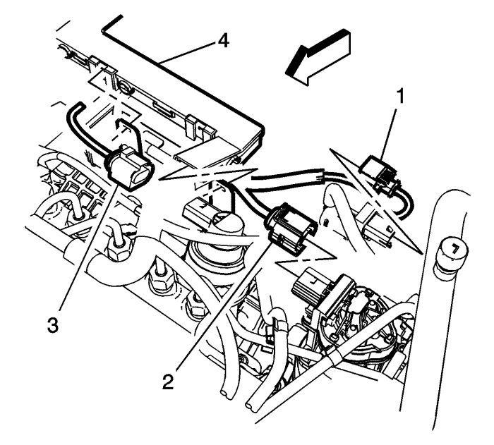
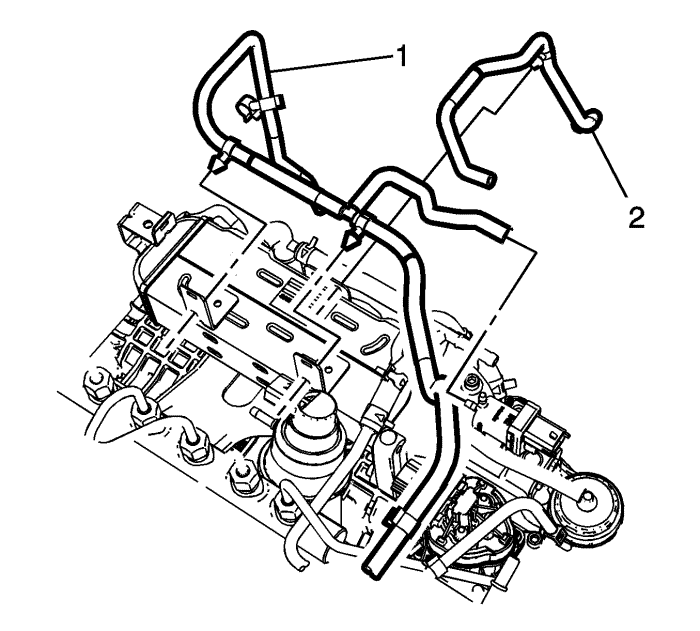
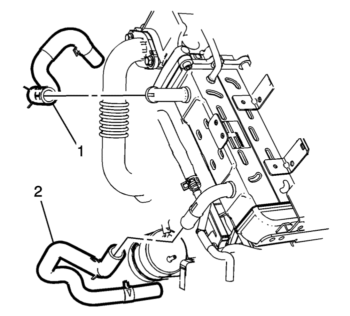
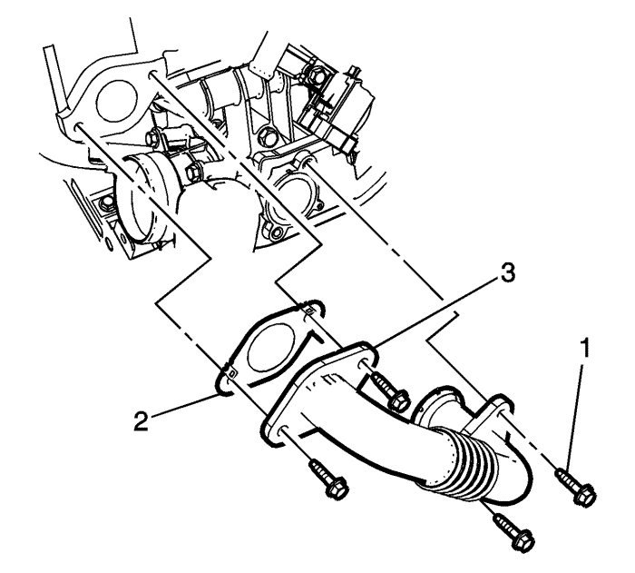
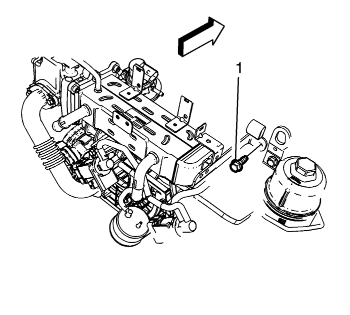
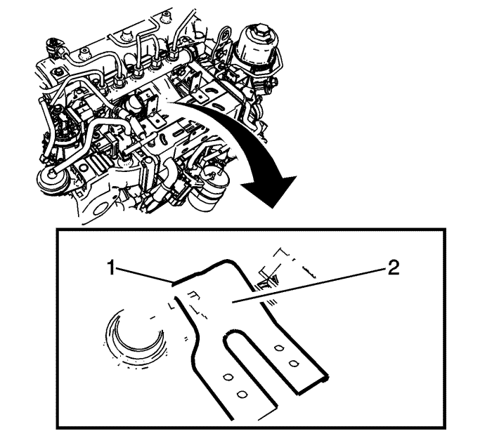
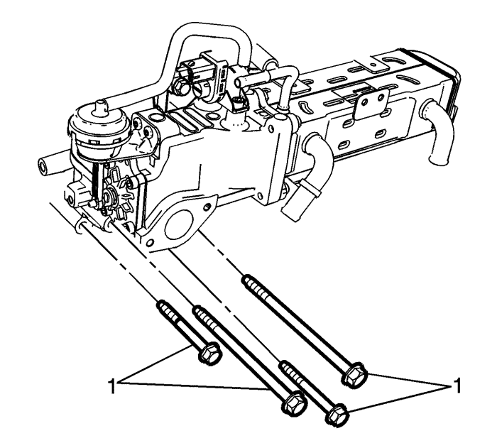
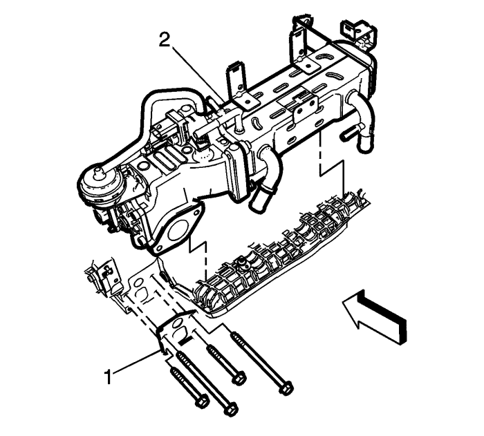
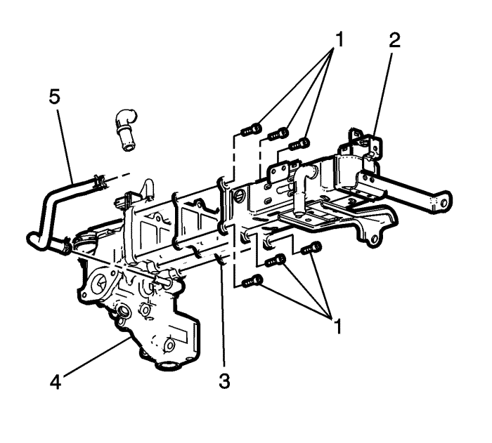

Sustitución del refrigerador de la válvula de recirculación de gases de escape — LNQ
Herramientas especiales
Tenazas para abrazadera de tubos flexibles BO 38185
Si desea informarse sobre herramientas equivalentes, consulte Herramientas especiales .
Procedimiento de desmontaje
- Desmonte el conjunto del tubo de distribución del combustible. Consultar Sustitución del conjunto del tubo de distribución de los inyectores de combustible .

- Extraiga el tubo flexible de rebose del depósito de compensación. Consultar Sustitución del tubo flexible de rebose del vaso de expansión del radiador
- Desconecte lo siguiente:
| • | Solenoide de vacío de EGR (1) |
| • | Conjunto del actuador de admisión (3) |
| • | Conducto del mazo de cables del motor (4) |

- Extraiga el tubo flexible de la bomba de vacío (1) y el tubo flexible de la válvula de ajuste de la entrada del colector (2).
- Elevar el vehículo y soportarlo de manera segura. Consultar Elevación del vehículo con un gato .

- Desmonte el soporte de montaje de la caja de cambios. Consultar Sustitución del soporte de montaje del cambio - Parte trasera : FWD (tracción delantera) → Tracción a las 4 ruedas .
- Extraiga el tubo flexible del colector del retorno de refrigerante del EGR (1) y el tubo flexible de alimentación de refrigerante de la válvula del EGR (2) del refrigerante del EGR.

- Extraiga los tornillos del tubo del EGR (1), la junta (2) y la junta (3).

- Extraiga el tornillo del soporte del apoyo del refrigerador del EGR (1).

Nota: La tuerca de la abrazadera del refrigerador del EGR se puede alcanzar por el lateral de la abrazadera con un adaptador extensible giratorio de 1/4 de pulgada.
- Retire la tuerca de la abrazadera del refrigerador del EGR (2)

- Desmonte los tornillos de soporte de la válvula del EGR (1).

- Desmonte la válvula y el refrigerador del EGR (2) como un conjunto.
- Deseche la junta de la válvula EGR (1).

- Separe el tubo flexible de alimentación del refrigerante del EGR (2).
- Desmonte los tornillos del refrigerador del EGR (1).
- Separe el refrigerador del EGR (5) de la válvula del EGR (4) y deseche la junta (3).
Procedimiento de montaje
- Monte el refrigerador del EGR (5) con una junta NUEVA (3) al conjunto de la válvula del EGR (4).
Precaución: Consulte Precaución con las fijaciones en la sección Prólogo
- Apriete los tornillos de la EGR (1) a 25 N·m (18 lib. pie).
- Coloque el conjunto de la válvula y el refrigerador del EGR (2) a la culata con una junta NUEVA (1).
- Monte los tornillos del conjunto de válvulas EGR (1) y apriételos hasta 25 N·m (18 lib. pie).
- Coloque la tuerca de la fijación del refrigerador de EGR (2) en la culata y apriétela a 25 N·m (18 lib. pie).
Nota: La tuerca del soporte del refrigerador del EGR se puede alcanzar por el lateral de la abrazadera con un adaptador extensible giratorio de 1/4 de pulgada.
- Coloque la tuerca del soporte del refrigerador de EGR (1) en la culata y apriétela a 25 N·m (18 lib. pie).
- Monte el tubo flexible del colector del retorno de refrigerante del EGR (1) y el tubo flexible de alimentación de refrigerante de la válvula del EGR (2).
- Monte el tubo del EGR (4) al colector de entrada y a la válvula del EGR con una junta NUEVA (2) y una junta (3).
- Apriete los pernos (1) a 25 N·m (18 lib. pie).
- Monte el tubo flexible de la bomba de vacío (1) y el tubo flexible de la válvula de ajuste del colector (2).
- Monte el tubo flexible de rebose del depósito de compensación. Consultar Sustitución del tubo flexible de rebose del vaso de expansión del radiador .
- Coloque el conducto del mazo de cables del motor (4) en las pestañas del refrigerador del EGR.
- Conecte lo siguiente:
| • | Solenoide regulador de la válvula EGR (1) |
| • | Conjunto del actuador de admisión (3) |
- Monte el conjunto del tubo de distribución del combustible. Consultar Sustitución del conjunto del tubo de distribución de los inyectores de combustible .
| © Copyright Chevrolet Europe. All rights reserved |